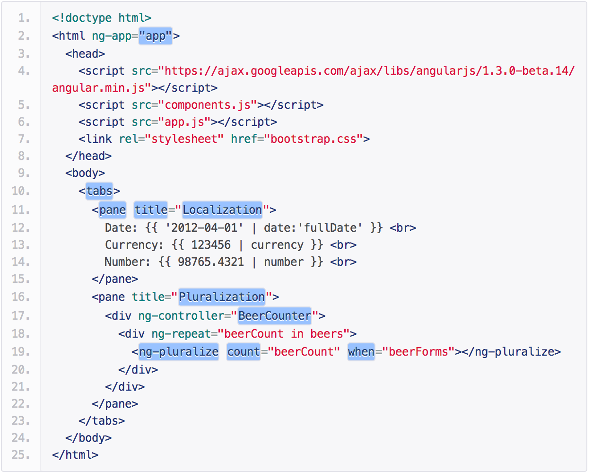
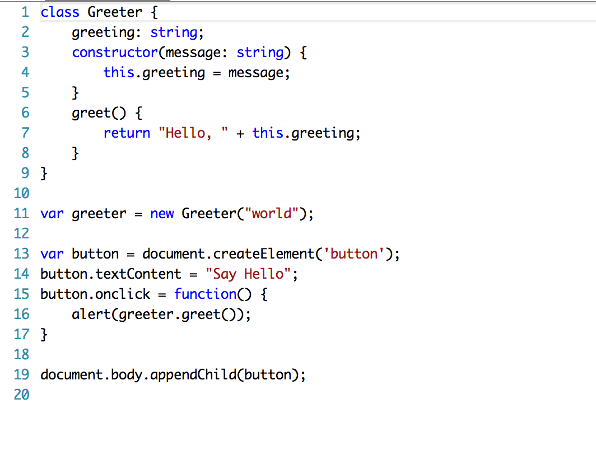
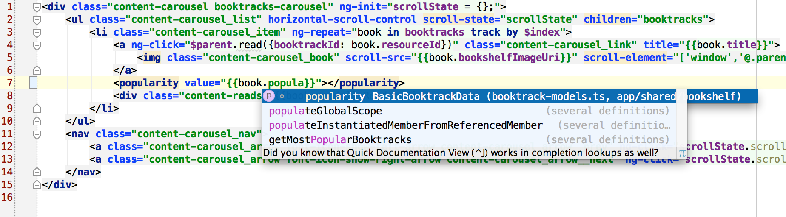
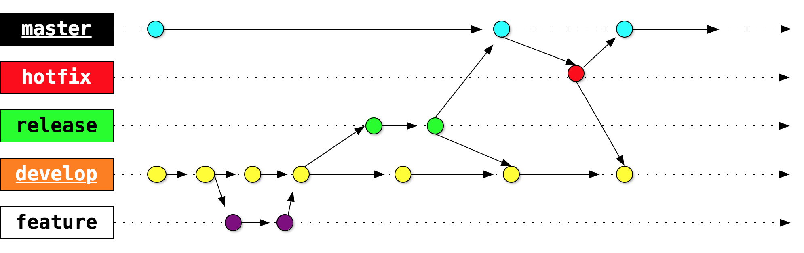

Continuous deployment of a Single Page Application on Azure
Part of dev team @ Booktrack
-
 Konstantin Raev
Konstantin Raev -
 Richard Sentino
Richard Sentino

Our front end stack
defeating complexity with abstractions
- Angular.js
- Typescript
- CSS Preprocessors
- Bower
Angular.js
Typescript
A superset of EcmaScript 6 with compile time type checking
Typescript + Angular
Stylus

Performance matters
 https://www.youtube.com/watch?v=7ubJzEi3HuA
https://www.youtube.com/watch?v=7ubJzEi3HuA
Bing experiment

Things we do to improve performance
- Use Content Delivery Network to server files from closest location
- Reduce download size of scripts, styles and images
- Bundle multiple files into one
- Eagerly download only content "above the fold"
- Use browser cache


Cache busted

How to do all this reliably?
funny image
Using JavaScript and Node.js as CLI tool
funny image
All Node build/integration tools are based on file matching configurations
main: {
src: ['app/**/*.ts', 'test/**/*.ts']
}

Problem?
Order of tasks execution
FUNNY IMAGE

Deployment steps
- Compile and minify stuff with Gulp
- Put it in the CLOUD
- ???
- PROFIT
Microsoft Azure has Node.js SDK

Checkout github.com/bestander/deploy-azure-cdn

Final point
- Organize your project with your favorite preprocessors
- Use Node.js CLI to build deployment artifacts
- Use Node.js to deploy to CDN
Continuous Delivery Pipeline
Team - Version Control - Build - Test - CI/Deployment - UAT/QA - Production
Team
Planning
User Experience
User Interface
Dev team (front-end / back-end / mobile)
Development Workflow
Cont. Integration on my local
really ?
Cont. Integration on my local
Compile TypeScript
Compile Stylus
Run Jasmine/Karma tests
Continuous Integration w/ Codeship.IO
- Watches bitbucket repo
- Deploy to Dev or Production
- Free and paid options
add more details here
Deployment
- work on local branch
- push to master for QA/Others to test
- Master branch > for demo
- Production branch > for prod release
Azure
- Upload to CDN
- No IIS/Apache/Nginx
- all assets
add more details here
Azure - Scalability
- serve files from the closest location
- server locations: asia, uk, us, etc ???
Importance of Automation
save time
focus on important tasks
faster development
Continuous Improvement
pair programming
refactor early, refactor often, small stuff
Summary
Thank you!
Slide Backgrounds
Set data-background="#007777" on a slide to change the full page background to the given color. All CSS color formats are supported.
Image Backgrounds
<section data-background="image.png">Repeated Image Backgrounds
<section data-background="image.png" data-background-repeat="repeat" data-background-size="100px">Background Transitions
Pass reveal.js the backgroundTransition: 'slide' config argument to make backgrounds slide rather than fade.
Background Transition Override
You can override background transitions per slide by using data-background-transition="slide".
Clever Quotes
These guys come in two forms, inline:
“The nice thing about standards is that there are so many to choose from”
and block:
“For years there has been a theory that millions of monkeys typing at random on millions of typewriters would reproduce the entire works of Shakespeare. The Internet has proven this theory to be untrue.”
Intergalactic Interconnections
You can link between slides internally, like this.
Fragmented Views
Hit the next arrow...
... to step through ...
any type- of view
- fragments
Fragment Styles
There's a few styles of fragments, like:
grow
shrink
roll-in
fade-out
highlight-red
highlight-green
highlight-blue
current-visible
highlight-current-blue
Spectacular image!